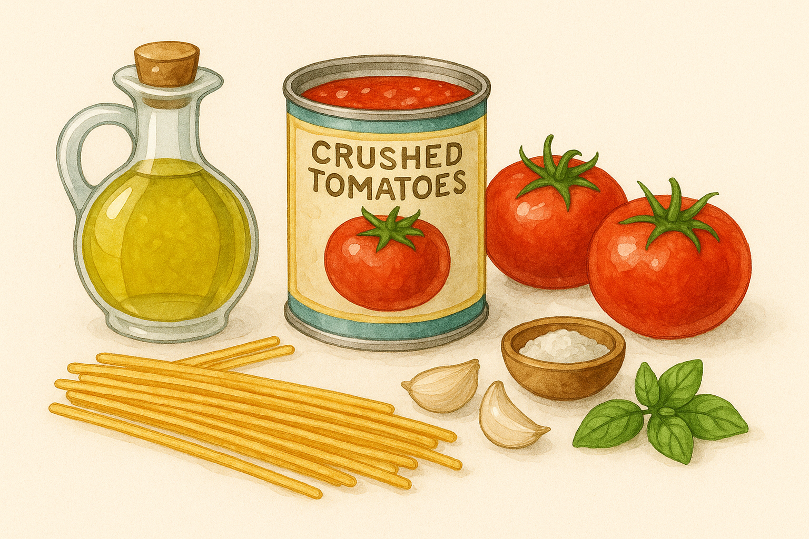
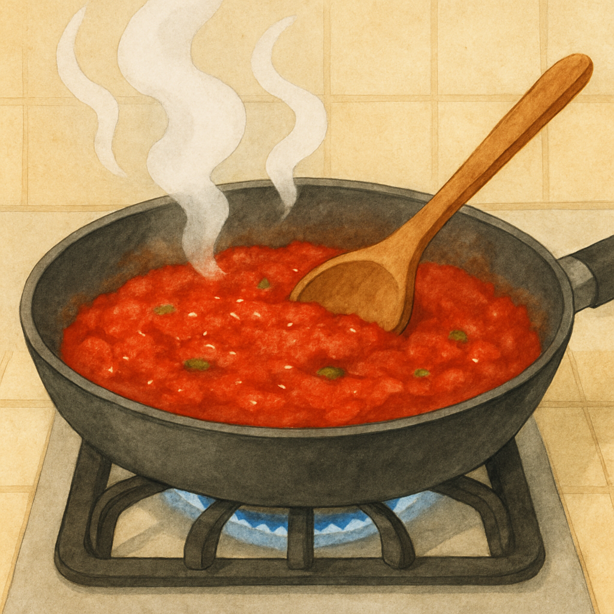
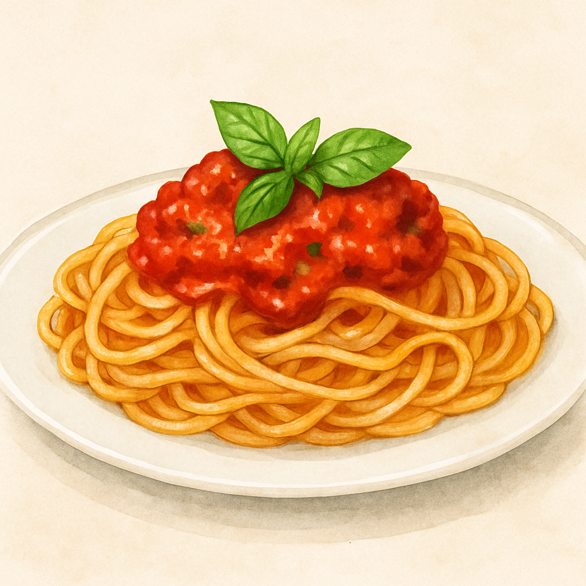

My Favorite Recipe: Marinara Pasta
Ingredients
- 2 tablespoons olive oil
- 3 cloves garlic, minced
- 1 can (28 oz) crushed tomatoes
- 1 teaspoon dried oregano
- Salt and pepper to taste
- Fresh basil leaves (optional)
- 12 oz pasta (spaghetti or your choice)
Instructions
- Cook pasta according to package instructions until al dente. Drain and set aside.
- In a large pan, heat olive oil over medium heat. Add minced garlic and sauté for 1-2 minutes until fragrant.
- Add crushed tomatoes and oregano. Stir well and let simmer for 15-20 minutes, stirring occasionally.
- Season the sauce with salt and pepper to taste. Add fresh basil leaves if using.
- Toss the cooked pasta with the marinara sauce until well coated.
- Serve hot and enjoy!


